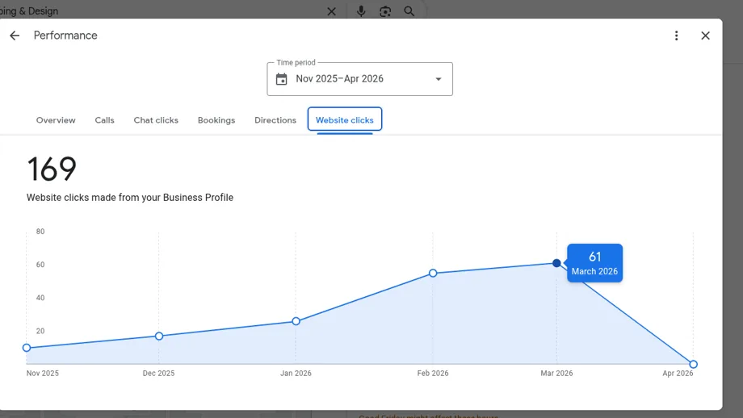
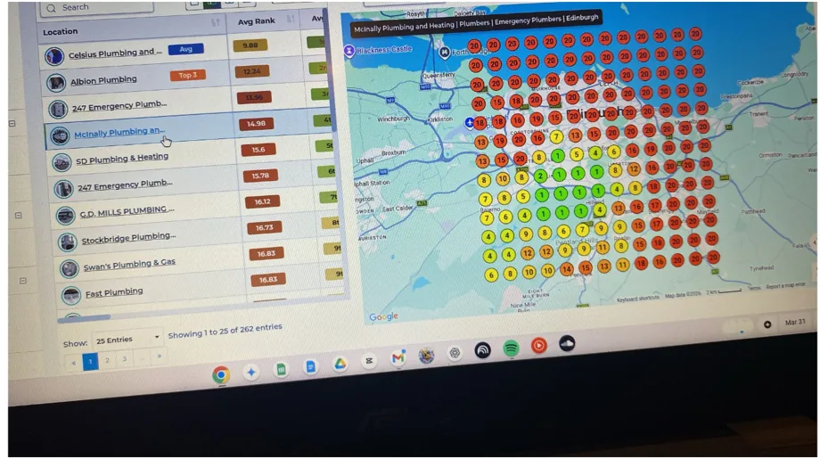
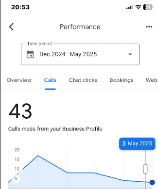
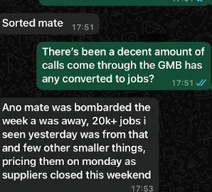

90-day local SEO sprint · trades & service businesses
Your competitors are taking your calls.
We help local service businesses move into the top local search
results, turn rankings into quote requests, and track what those
extra calls are worth before you spend another month guessing.
The best trade in town still loses if the wrong business shows up first.
Most local service businesses I meet are stuck on the same loop:
paying for Checkatrade and Bark leads that don't convert, watching
quieter competitors outrank them on Google Maps, and only getting
busy when a referral comes through.
Local SEO fixes the root cause. Done properly, your Google
Business Profile and website become a measurable sales system:
rankings, calls, quote requests, booked jobs, and revenue.
×
Invisible on Google Maps
You don't show up in the 3-pack for "[your trade] near me" — even in the towns you actually work in.
×
Bleeding money on lead-gen sites
Bark, MyBuilder, Checkatrade — paying per lead for jobs that ghost, undercut, or don't suit you.
×
A website that doesn't sell
Pretty enough, but it doesn't say where you work, what you do, or why someone should pick you.
×
Reviews that go nowhere
Happy customers, but no system for getting reviews that move you up the rankings.
What I do
Everything needed to turn local searches into booked jobs.
Strategy, rankings, website conversion, and tracking in one system.
Built for plumbers, roofers, electricians, builders, landscapers,
cleaners, fitters, and other service businesses.
01
Local SEO Audit
Free first look · paid deep audit available
A proper, plain-English breakdown of why you're not ranking, what's
holding the site back, and exactly what to fix first. Includes a
30-minute walkthrough call.
I run your local SEO end-to-end — Google Business Profile, on-site
content, location pages, citations, reviews, the lot. You get a
clear monthly report and a phone that rings.
For trades whose website is the bottleneck. A fast, well-structured
site built around the services and towns you want to win — ready
to rank from day one.
These are the jobs, calls, and rankings behind the promise.
Real examples from local SEO and Google Business Profile work
across landscaping, plumbing, bathrooms, and building services.
Results vary by area, competition, and how quickly the site and
profile can be improved.

Case · Landscaping
Hepburn Landscaping moved from page 2 and 3 into the local pack.
Before the campaign, Hepburn had only 2 calls in December and
was buried on Google Maps. After the profile and local signals
were worked on, the business ranked 2nd for multiple keywords
and started getting consistent monthly enquiries.
Calls before
2→10-15/mo
Website clicks
Low→60+/mo
Ranking movement
Page 2/3→2nd
Google Business Profile + local SEO momentum

Case · Plumbing
McInally Plumbing climbed in a competitive Edinburgh market.
McInally had only 3 calls in January and wanted a steadier
alternative while paying for ads. Despite gaps in website size,
the business moved from the second page to 4th and fluctuated
into the top 3 for competitive plumbing searches.
Calls before
3→More stable
Maps position
Page 2→4th/top 3
Competitor beaten
Old employer→Outranked
Local SEO for plumbing and heating search terms

Case · Bathrooms
FPS Bathrooms reached the top of Google Maps in Glasgow.
Scott came in when work had slowed down and the business was
sitting on the second page of Google Maps. After the local SEO
work started, FPS moved to the top in Glasgow and saw bathroom
renovation calls climb as high as 18 in June.
Calls before
1/mo→18/mo
Maps ranking
Page 2→Top spot
Speed
Slow→48 hours
Google Maps visibility for bathroom renovation leads

Case · Builders / landscaping
HSC Builders used local SEO momentum to fund bigger growth.
HSC started on page 5 with little budget and not enough work.
After ranking 2nd for the keywords they wanted, the campaign
helped bring in £20k+ of jobs within weeks, then created enough
momentum to fund ads and larger quotes.
Starting point
Page 5→2nd
Jobs generated
Low→£20k+
Quotes later
None→£200k
Local SEO first, then ads once cash flow improved
"This is why ROI matters: even a small lift in calls can pay
for the campaign when the average job value is high enough."
Ryan's working principle for trades and service businesses
"The goal is not more traffic for the sake of it. The goal is
more calls, more quote requests, and enough tracking to know
what is actually making money."
Local SEO offer, built around commercial proof
Websites and landing pages
Local SEO works better when the page can turn visitors into enquiries.
A few examples of service-business websites and Google Ads landing
pages built around phone calls, quote forms, trust signals, and
clear local positioning.
No 47-page strategy decks. No KPI theatre. Just the work that moves
the needle, in the right order.
01
Discovery call
A free 20-minute call. I learn your trade, your patch, your good
jobs vs. bad jobs, and where leads currently come from.
Week 0
02
Audit & plan
Deep dive into your Google Business Profile, site, and top 5
local competitors. You get a prioritised 90-day plan in plain
English.
Week 1–2
03
Build & fix
Website fixes, service pages, town pages, citations, schema,
reviews flow. Work I do — you keep doing what you're good at.
Week 2–8
04
Rank & iterate
Monthly call, monthly report. We double down on the services
and towns that are converting and prune the ones that aren't.
Ongoing
ROI calculator
See what a few extra local calls could be worth.
Pick your trade, area size, close rate, average job value, margin,
and customer lifetime. The calculator estimates what conservative
top-3 local visibility could be worth over 12 months after SEO fees.
Monthly search demand changes by trade and city size.
Uses 28% top-3 click-through, 10% captured share, and a 15% buffer.
Your audit checks the real keywords, rankings, competitors, and opportunity.
Step 1 — Your business
Step 2 — Your numbers
Of the calls you get, how many become paid jobs?
10%35%60%
Pre-filled by trade — adjust if needed.
£100£25k£50k
Net margin after labour, materials, and overheads.
10%35%70%
How long does the average customer keep using you?
1 yr2.5 yrs5 yrs
Conservative methodology:
We estimate you capture only 10% of available top-3 traffic, then apply a
15% buffer for seasonality, missed calls, no-shows, and market variance.
Your estimated results
Monthly searches1,200Local searches in your area
Est. calls / month29From a top-3 local position
Jobs won / month7At your close rate
Monthly revenue£14,000From local search leads only
Monthly profit£4,900At your margin
12-month net profit — after all fees£50,737After estimated setup and monthly SEO investment
Return on investment over 12 months2,540%
How we calculate this
Monthly local searches for your trade
1,200
Top 3 local results click-through
336
Your share of that traffic
34
Calls generated
29
After seasonality buffer
25
Jobs won per month
7
Multiplier applied
1×
Monthly revenue
£14,000
Monthly profit
£4,900
Total investment over 12 months
£7,963
12-month net profit
£50,737
Results shown are estimates based on conservative planning assumptions.
Actual results vary by market, competition, location, business activity,
conversion rate, and how quickly the site and profile can be improved.
Free audit
Your Google Rankings — Live on Screen.
Book a free ranking audit and we’ll walk through your current
Google visibility, the mistakes holding you back, and what those
missing local calls could be worth.
📍
Your exact ranking position
We show you live on screen where you appear across your service area.
🔍
The mistakes hurting you
We walk through what’s keeping you out of the top 3 right now.
💷
What it’s costing you per month
A real number based on your trade, area, and average job value.
No obligation.
If we’re not a fit, we’ll tell you. If we are, we’ll show you exactly
what working together looks like.
Most clients see meaningful Google Business Profile movement
within 4–6 weeks, and a clear lift in calls and form fills by
month three. Anyone promising you results in week one is
either lying or doing something that'll get you penalised.
Do you tie clients into long contracts?
No. The retainer has a 3-month minimum because the work needs
that long to show — after that you're month-to-month and can
stop any time. I'd rather you stayed because it's working.
I'm already paying Bark / Checkatrade. Is this instead, or as well?
Instead, eventually. Most clients keep paid lead-gen running
for the first 60–90 days while organic enquiries ramp, then
cut it. The savings often cover the retainer.
Do you only work in Scotland?
Mostly — I'm based in Scotland and know the local market well
(search behaviour, competitors, even the towns people abbreviate
differently). I do take on the occasional UK client outside
Scotland for the right fit.
What if my website is a mess?
Then we either fix it (cheaper, faster) or rebuild it. The
audit makes that call honestly. I won't push a rebuild if a
tidy-up will do.
Do you do Google Ads / Meta Ads as well?
Not as a service. Local SEO compounds; ads don't. If paid is
genuinely the right move for you, I'll point you to two ad
specialists I trust — at no kickback to me.
Can I see references from current clients?
Yes. I'll share names, numbers, and an introduction once we've
had a discovery call and it's clear we're a good fit on both
sides.
If your competitors are getting the calls, let's find the gap.